Code
import sys
sys.executable'/opt/hostedtoolcache/Python/3.10.16/x64/bin/python3'import sys
sys.executable'/opt/hostedtoolcache/Python/3.10.16/x64/bin/python3'title: Task 1
The Fourier transformation \(f(x, y) \rightarrowtail F(u, v)\) of a greyscale image \(f(x,y)\) results in a band-limited signal in the spatial frequency range with maximum frequencies \(f_{umax}\) and \(ƒ_{vmax}\). For representation in the computer, the (partial) image is sampled in x direction with 20 sampling points per mm and in y direction with 10 sampling points per mm.
According to the Nyquist sampling theorem, the maximum representable frequency (Nyquist frequency) in each direction is half the sampling frequency. The sampling frequency can be derived from the given sampling points per mm.
Sampling frequency in x is \(f_{sx}\) and the Nyquist frequency in x is \(f_{umax}\): \[\begin{align*} &f_{sx} = 20\;\text{points/mm} = 20 \times 10^3 \, \text{points/m} \\ \implies &f_{umax} = \frac{f_{sx}}{2} = 10.0 \, \text{cycles/mm} \end{align*}\]
Sampling frequency in y is \(f_{sy}\) and the Nyquist frequency in y is \(f_{vmax}\): \[\begin{align*} &f_{sy} = 10 \, \text{points/mm} = 10 \times 10^3 \, \text{points/m} \\ \implies &f_{vmax} = \frac{f_{sy}}{2} = 5.0 \, \text{cycles/mm} \end{align*}\]
This ensures error-free reconstruction, as the digital image will contain all frequency components of the original image within the Nyquist limit. Frequencies above these limits would result in aliasing, violating error-free reconstruction conditions.
What is the minimum memory requirement for the color image \(f_F(x, y)\) when stored in a conventional computer system, if \(1024\) values are to be distinguished per color channel. Describe the image format to be used.
To start lets find the number of ixels
Let the image dimensions in mm be \(L_x\) (width) and \(L_y\) (height).
- Pixels in \(x\)-direction: \(N_x = 10.0 \cdot L_x\) - Pixels in \(y\)-direction: \(N_y = 5.0 \cdot L_y\) - Total number of pixels: \[
N_{\text{pixels}} = N_x \cdot N_y = 50.0 \cdot L_x \cdot L_y
\]
Each pixel in a color image has values for three color channels: Red, Green, and Blue (RGB). Each channel can store \(1024\) distinct values, which means \(log_2^{1024} = 10.0\) bits per channel.
Total bits per pixel: \(b = 10.0 \times 3 = 30.0\) bits/pixel.
The memory requirement is the product of the number of pixels and bits per pixel: \[ \text{Used Memory} = N_{\text{pixels}} \cdot b = (50.0 \cdot L_x \cdot L_y) \cdot b \, \text{bits} = 6.25 \cdot L_x \cdot L_y \cdot 30.0 \, \text{bytes} = 187.5 \cdot L_x \cdot L_y \, \text{bytes} \]
How many colors could be represented with the quantization chosen in sub-task 3? (2pts)
Each channel (Red, Green, and Blue) can represent 1024 intensity levels. With 10 bits per channel and 3 channels, the total number of colors is: \[ \text{Total colors} = 1024^3 = 1,073,741,824 \]
title: “task 2”
For the subjective enhancement of a greyscale image \(G = g(x, y)\) , a transformation \(T_G\) is performed as a so-called gamma correction in the form \(T_G : g \rightarrow f\) with \(f(x, y) = c g^\gamma (x, y)\) where \(g, f \in [0, 255]\).
Sketch the transformation curve \(T_G\) for \(\gamma_1 = 0.5\) and \(\gamma_2 = 2\)
The first step is to find the values of \(c\) for both cases. Since \(\max(f) = \max(g) = 255\), we have \(c = 255 / 255^\gamma\).
from matplotlib import pyplot as plt
import numpy as np
def draw_transform_curve(gamma: float, ax: plt.Axes = None, label: bool = True):
if not ax:
fig, ax = plt.subplots()
x = np.linspace(0, 255, 256)
c = 255 / 255**gamma
y = c * x**gamma
message = f"$f = {c:0.4f} \\times g^{{{gamma}}}$"
if label:
ax.plot(x, y, label=message)
else:
ax.plot(x, y)
ax.set_xlabel("g")
if label:
ax.set_ylabel("f")
else:
ax.set_ylabel(message)
fig, ax = plt.subplots()
for gamma in [0.5, 2]:
draw_transform_curve(gamma, ax)
ax.set_title(f"Transformation curve for $\\gamma=0.5$ and $\\gamma=2$")
ax.legend()
plt.show()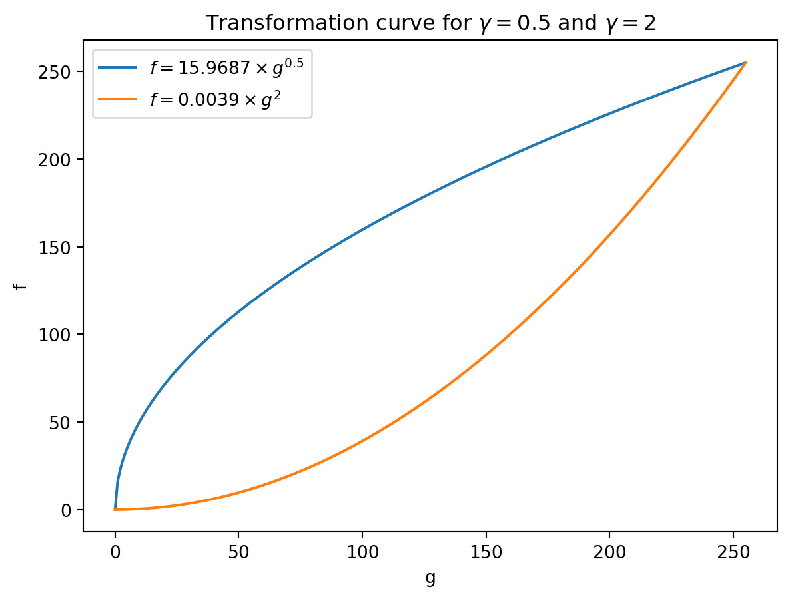
How is the coeficient c typically determined? (2pts)
The coefficient \(c\) is typically determined such that the maximum value of the input image is mapped to the maximum value of the output image. This is done to ensure that the full dynamic range of the output image is used.
As mentioned above, \(c = 255 / 255^\gamma\).
In which respect and for which type of input images \(G\) do the two gamma values \(\gamma_1,\;\gamma_2\) lead to an image enhancement respectively? (2pts)
For \(\gamma < 1\), the transformation curve is concave, which means that the lower intensity values are stretched more than the higher intensity values. This leads to a brighter image with more contrast. This is useful for images with low contrast.
For \(\gamma > 1\), the transformation curve is convex, which means that the higher intensity values are stretched more than the lower intensity values. This leads to a darker image with more contrast. This is useful for images with high contrast.
What should be the minimum slope of the transform function?
It’s important to note that a slope of exactly 1 implies no change in contrast, as the transformation function becomes an identity mapping. Also, a slope of 0 implies that the output image will be a constant value, which is not useful for image enhancement.
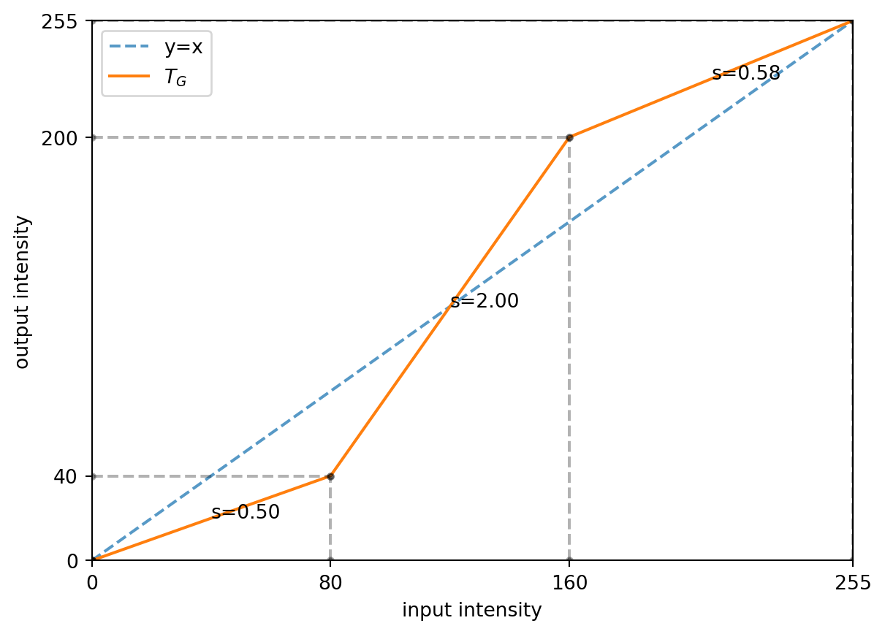
As we can see, the gray values between {python} spread_range[0] are streched between {python} spread_range[1] which has a slope greater than 1. On the other hand, the gray values between {python} compress_range[0] are compressed between {python} compress_range[1] which has a slope smaller than 1.
title: “task 3”
In this task you will need to perform threshold-based image analysis:
Read the greyscale image brain.png, which is provided on the lecture homepage. Reduce the salt and pepper noise in the image using a median filter. (3pts)
import cv2
import numpy as np
import matplotlib.pyplot as plt
import os
img_noise = cv2.imread("brain-noisy.png", cv2.IMREAD_GRAYSCALE)
if img_noise is None:
img_noise = cv2.imread("./reports/brain-noisy.png", cv2.IMREAD_GRAYSCALE)
assert img_noise is not None, "Image not found {}".format(os.listdir())
img = cv2.medianBlur(img_noise, 5)
img = cv2.GaussianBlur(img, (5, 5), 0)
fig, ax = plt.subplots(1, 3, figsize=(15, 5))
ax[0].imshow(img_noise, cmap="gray")
ax[0].set_title("Original image")
ax[0].axis("off")
ax[1].imshow(cv2.medianBlur(img_noise, 3), cmap="gray")
ax[1].set_title("Median filtered image (3x3)")
ax[1].axis("off")
ax[2].imshow(img, cmap="gray")
ax[2].set_title("Median filtered image (5x5)")
ax[2].axis("off")
plt.show()[ WARN:0@0.011] global loadsave.cpp:241 findDecoder imread_('brain-noisy.png'): can't open/read file: check file path/integrity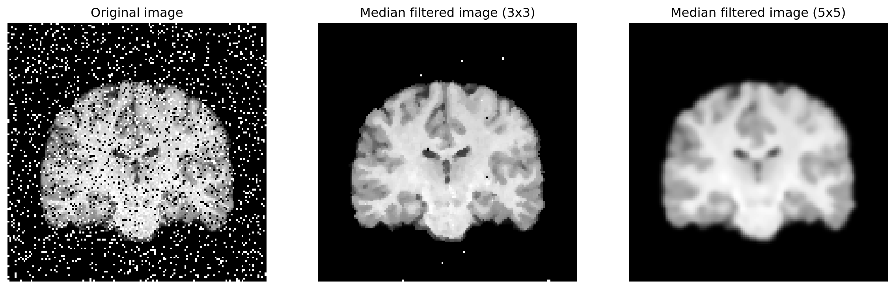
As we can see the kernel size of \(3 \times 3\) is not enough to remove the noise, while the kernel size of \(5 \times 5\) is sufficient.
Otsu thresholding is a histogram-based method for image segmentation. Use it to find an intensity threshold to segment brain pixels from background. Use Otsu thresholding again to find the threshold only over the brain pixels to segment brain’s grey matter from the white matter. Using the two thresholds create three binary masks brain-bg.png, brain-gm.png, brain-wm.png, which should be white in regions of background, grey matter, and white matter, respectively, and black elsewhere. (4pts)
values, bin_edge = np.histogram(img, bins=256, range=(0, 256))
bin_centers = (bin_edge[:-1] + bin_edge[1:]) / 2
# values = values[1:]
# bin_centers = bin_centers[1:]
m = values.mean() * 2
values[values > m] = m
plt.bar(bin_centers, values, lw=2)
plt.title("Bounded histogram of the image (values capped at 2x the mean)")
plt.show()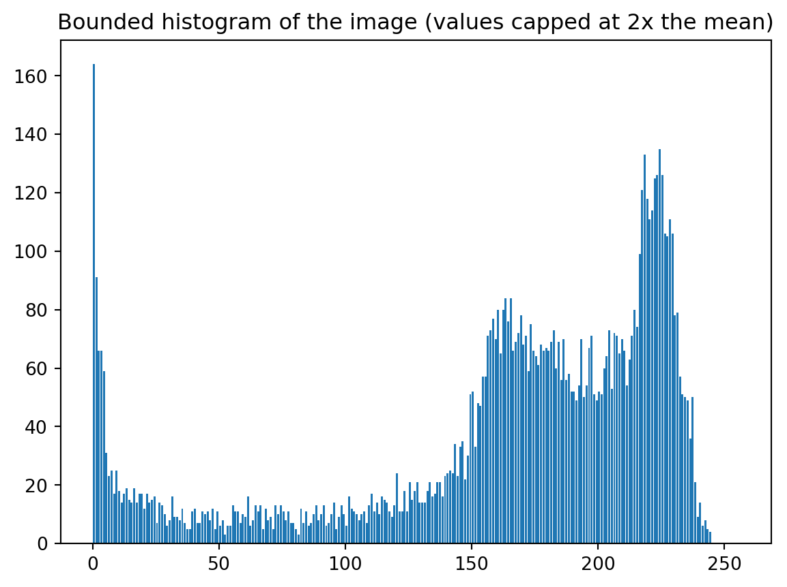
The correct way to use Otsu thresholding with several values is to use (Arora et al. 2008), which is not implemented in OpenCV. However, we can use the implementation in the skimage library (which implemented based on (Liao et al. 2001))
from skimage.filters import threshold_multiotsu
def otsu_threshold(
img: np.ndarray, classes: int
) -> tuple[list[np.ndarray], np.ndarray]:
threshold = threshold_multiotsu(img, classes=classes).tolist()
threshold = [0] + threshold + [255]
assert (
len(threshold) == classes + 1
), "The number of thresholds should be equal to the number of classes - 1"
masks = [(img >= t1) & (img < t2) for t1, t2 in zip(threshold, threshold[1:])]
# masks.append(img >= threshold[-1])
assert all(mask.dtype == bool for mask in masks), "Masks should be boolean"
assert (
len(masks) == classes
), "The number of masks should be equal to the number of classes"
return masks, threshold[1:-1]
(brain_bg, brain_gm, brain_wm), threshold = otsu_threshold(img, 3)colors = ["r", "g", "y"]
(brain_bg, brain_gm, brain_wm), threshold = otsu_threshold(img, 3)
print(f"Threshold for the whole image: {threshold}")
values, bin_edge = np.histogram(img, bins=256, range=(0, 256))
bin_centers = (bin_edge[:-1] + bin_edge[1:]) / 2
m = values.mean() * 2
values[values > m] = m
plt.bar(bin_centers, values, lw=2)
for th, color in zip(threshold, colors):
plt.axvline(th, color=color, lw=2, ls="--", label=f"Threshold: {th}")
plt.legend()
plt.title("Bounded histogram of the image (values capped at 2x the mean)")
plt.show()Threshold for the whole image: [77, 182]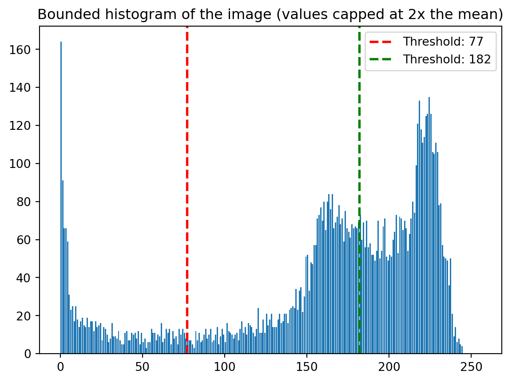
fig, ax = plt.subplots(1, 4, figsize=(15, 5))
ax[0].imshow(brain_bg, cmap="gray")
ax[0].set_title("Background")
ax[0].axis("off")
ax[1].imshow(brain_gm, cmap="gray")
ax[1].set_title("Grey matter")
ax[1].axis("off")
ax[2].imshow(brain_wm, cmap="gray")
ax[2].set_title("White matter")
ax[2].axis("off")
ax[3].imshow(brain_bg * 1 + brain_gm * 2 + brain_wm * 3, cmap="gray")
ax[3].set_title("All")
ax[3].axis("off")
plt.show()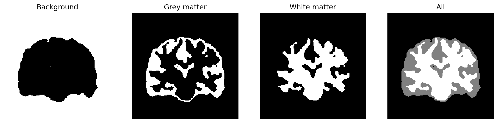
Plot a log-scaled histogram of the image, which should show how frequently different intensity values occur in the image. How could you roughly estimate the two thresholds you found in the previous task just by looking at the histogram? (3pts)
values, bin_edge = np.histogram(img, bins=256, range=(0, 256))
bin_centers = (bin_edge[:-1] + bin_edge[1:]) / 2
plt.bar(bin_centers, values, lw=2)
plt.yscale("log")
for th, color in zip(threshold, colors):
plt.axvline(th, color=color, lw=2, ls="--", label=f"Threshold: {th}")
plt.legend()
plt.title("Log-scaled histogram of the image")
plt.show()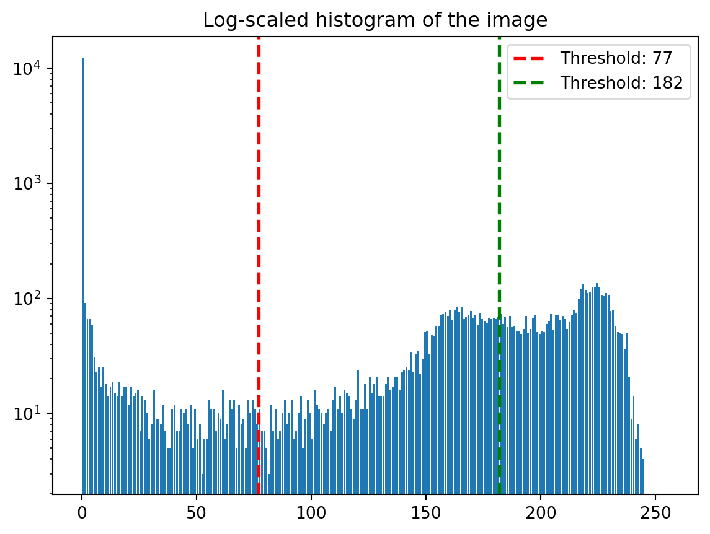
As we can see, the histogram has two peaks, which correspond to the grey matter and white matter. The two thresholds can be estimated by finding the two peaks in the histogram. (The purpose of otsu thresholding is to find the optimal threshold for the two peaks)
Combine the three masks into a single colour image so that background, grey matter, and white matter are mapped to red, green and blue, respectively. (3pts)
combined_brain = np.stack([brain_bg, brain_gm, brain_wm], axis=-1).astype(np.uint8) * 255
plt.imshow(combined_brain)
plt.axis("off")
plt.show()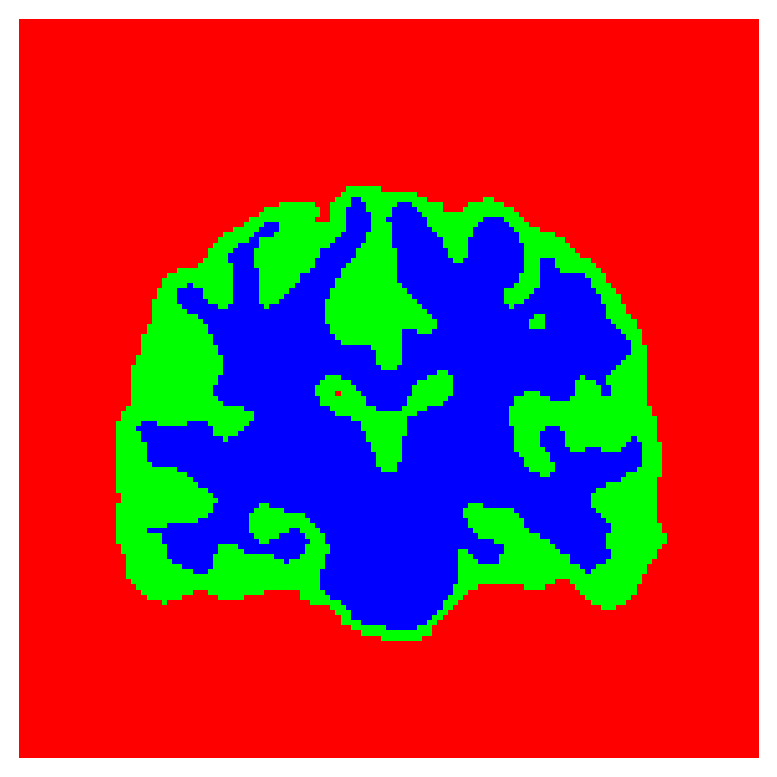
Use erosion (or any other morphological) filter to produce a border between the grey and white matter. Overlay that border on the denoised input image. (3pts)
kernel = np.ones((3, 3), np.uint8)
brain_wm_eroded = cv2.erode(brain_wm.astype(np.uint8), kernel, iterations=1)
brain_wm_dilated = cv2.dilate(brain_wm_eroded, kernel, iterations=1)
border = (brain_wm_dilated - brain_wm_eroded) * 255
alpha = 0.85
bordered_img = cv2.addWeighted(img, alpha, border, 1 - alpha, 0)
# plt.imshow(img, cmap="gray")
# plt.imshow(border, cmap="gray", alpha=0.5)
plt.imshow(bordered_img, cmap="gray")
plt.axis("off")
plt.show()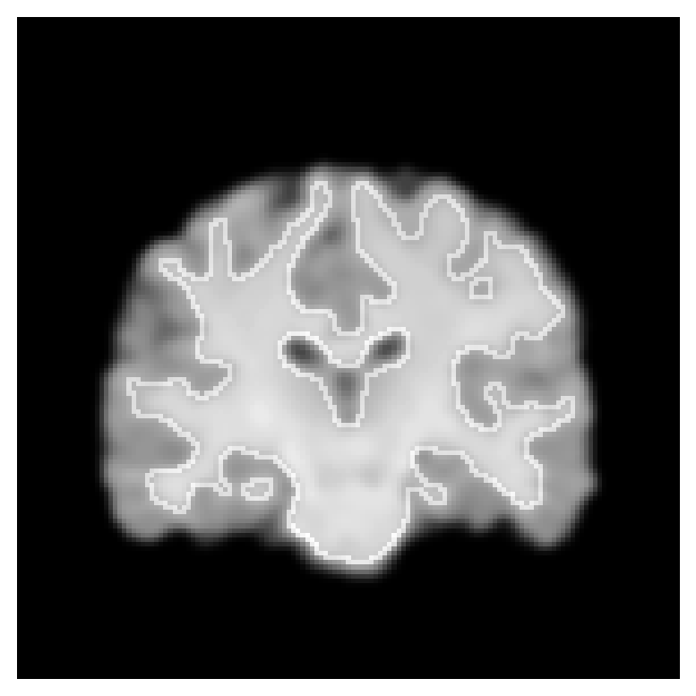
Use bilinear interpolation to up-sample the image by a factor of four along each axis. Apply the same thresholds as in 2) to obtain a segmentation into background, grey matter, and white matter. Up-sample the masks from 2) in the same way and compare the up-sampled masks to the masks from the up-sampled image. Can you see a diference? Why? Repeat the same procedure using nearest neighbour interpolation. Can you see a diference now? (4pts)
def upsample(img: np.ndarray, factor: int, interpolation: int) -> np.ndarray:
return cv2.resize(
img, (img.shape[1] * factor, img.shape[0] * factor), interpolation=interpolation
)
masks, threshold = otsu_threshold(img, 3)
img_upsampled = upsample(img, 4, cv2.INTER_LINEAR)
masks_upsampled, threshold_upsampled = otsu_threshold(img_upsampled, 3)
fig, ax = plt.subplots(2, 4, figsize=(15, 10))
fig.suptitle(
"Comparison of upsampled masks and upsampled image using linear interpolation",
fontsize=16,
)
titles = ["Background", "Grey matter", "White matter", "All"]
masks.append(masks[0] * 1 + masks[1] * 2 + masks[2] * 3)
masks_upsampled.append(
masks_upsampled[0] * 1 + masks_upsampled[1] * 2 + masks_upsampled[2] * 3
)
for i, (mask, mask_upsampled, title) in enumerate(zip(masks, masks_upsampled, titles)):
ax[0, i].imshow(mask, cmap="gray")
ax[0, i].set_title(title)
ax[0, i].axis("off")
ax[1, i].imshow(mask_upsampled, cmap="gray")
ax[1, i].set_title(f"{title} upsampled")
ax[1, i].axis("off")
plt.show()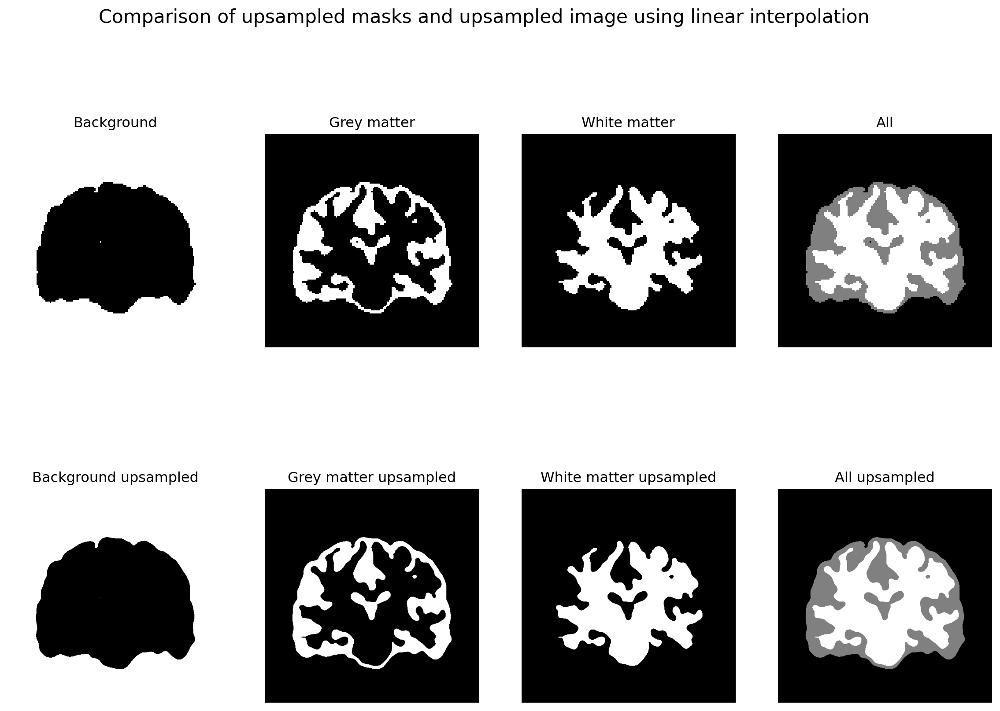
Clearly, we can see much smoother edges in the upsampled masks compared to the upsampled image. This is because the interpolation method used in the up-sampling process is linear, which smooths the edges.
Now, let’s repeat the same procedure using the nearest neighbour interpolation method.
masks, threshold = otsu_threshold(img, 3)
img_upsampled = upsample(img, 4, cv2.INTER_NEAREST)
masks_upsampled, threshold_upsampled = otsu_threshold(img_upsampled, 3)
fig, ax = plt.subplots(2, 4, figsize=(15, 10))
fig.suptitle(
"Comparison of upsampled masks and upsampled image using nearest neighbour interpolation",
fontsize=16,
)
titles = ["Background", "Grey matter", "White matter", "All"]
masks.append(masks[0] * 1 + masks[1] * 2 + masks[2] * 3)
masks_upsampled.append(
masks_upsampled[0] * 1 + masks_upsampled[1] * 2 + masks_upsampled[2] * 3
)
for i, (mask, mask_upsampled, title) in enumerate(zip(masks, masks_upsampled, titles)):
ax[0, i].imshow(mask, cmap="gray")
ax[0, i].set_title(title)
ax[0, i].axis("off")
ax[1, i].imshow(mask_upsampled, cmap="gray")
ax[1, i].set_title(f"{title} upsampled")
ax[1, i].axis("off")
plt.show()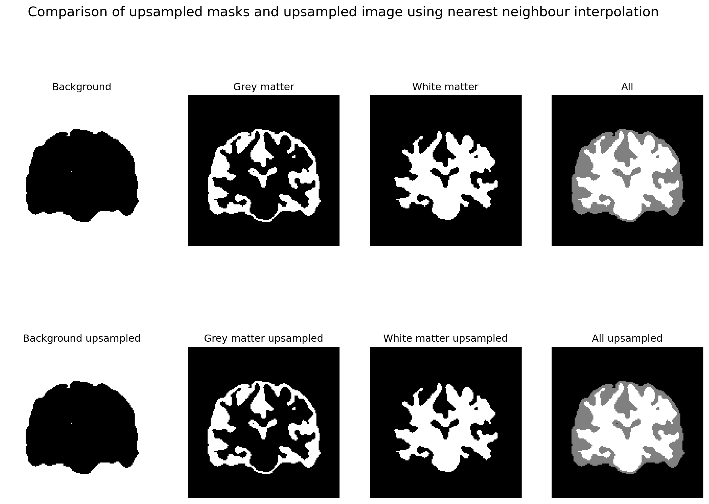
We can see the edges are much sharper in the upsampled masks compared to the upsampled image. This is because the nearest neighbour interpolation method does not smooth the edges.
TODO: Test same thing with pyrUp
def upsample_pyramid_(img: np.ndarray) -> np.ndarray:
# return cv2.resize(
# img, (img.shape[1] * factor, img.shape[0] * factor), interpolation=interpolation
# )
return cv2.pyrUp(img, dstsize=(img.shape[1] * 2, img.shape[0] * 2))
def upsample_pyramid(img: np.ndarray, factor: int) -> np.ndarray:
if factor <= 1:
raise ValueError("Factor should be greater than 1")
f = 1
while f < factor:
img = upsample_pyramid_(img)
f *= 2
return img
print(img.shape)
img_upsampled = upsample_pyramid(img, 4)
print(img_upsampled.shape)
fig, ax = plt.subplots(1, 2, figsize=(10, 5))
ax[0].imshow(img_upsampled, cmap="gray")
ax[0].set_title("Upsampled image")
ax[0].axis("off")
ax[1].imshow(img, cmap="gray")
ax[1].set_title("Original image")
ax[1].axis("off")
plt.show()(145, 145)
(580, 580)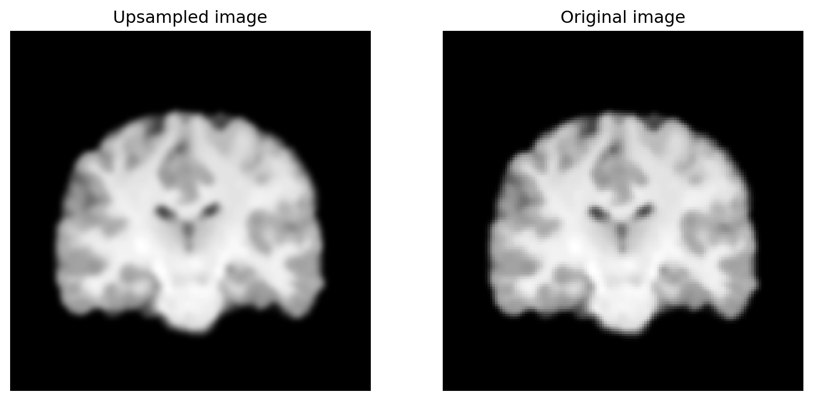
title: “Task 4”
We didnt used Monai’s Dataloader class, because we wanted to use the data in the HPC. The dataset implementation is availabel in the task4/brats_segmentations/dataloader.py
file name: task4/brats_segmentation/dataloader.pyclass ConvertToMultiChannelBasedOnBratsClassesd(MapTransform):
def __call__(self, data):
d = dict(data)
for key in self.keys:
print(
f"Original label shape: {d[key].shape}, unique values: {torch.unique(d[key])}"
)
result = []
# Tumor Core (TC): Combine label 1 and label 4
tc = torch.logical_or(d[key] == 1, d[key] == 4)
result.append(tc)
# print(f"Tumor Core (TC) unique values: {torch.unique(tc)}")
# print(1 / 0)
# exit()
# Whole Tumor (WT): Combine label 1, label 2, and label 4
wt = torch.logical_or(
torch.logical_or(d[key] == 2, d[key] == 4), d[key] == 1
)
result.append(wt)
# print(f"Whole Tumor (WT) unique values: {torch.unique(wt)}")
# Enhancing Tumor (ET): Only label 4
et = d[key] == 4
result.append(et)
# print(f"Enhancing Tumor (ET) unique values: {torch.unique(et)}")
# Stack binary masks into multi-channel format
d[key] = torch.stack(result, dim=0).float()
# print(
# f"Transformed label shape: {d[key].shape}, unique values: {torch.unique(d[key])}"
# )
return d
# Preprocessing and augmentation pipeline
def get_transforms(roi_size, augment=True):
"""
Generate transforms for data preprocessing and augmentation.
Args:
roi_size (tuple): Size of the region of interest for cropping.
augment (bool): Whether to apply augmentations.
Returns:
Compose: Transformation pipeline.
"""
transforms = [
LoadImaged(keys=["t1", "t1ce", "t2", "flair", "label"]),
EnsureChannelFirstd(keys=["t1", "t1ce", "t2", "flair", "label"]),
ConcatItemsd(keys=["t1", "t1ce", "t2", "flair"], name="image"),
Orientationd(keys=["image", "label"], axcodes="RAS"),
Spacingd(
keys=["image", "label"],
pixdim=(1.0, 1.0, 1.0),
mode=("bilinear", "nearest"),
),
NormalizeIntensityd(keys="image", nonzero=True, channel_wise=True),
ConvertToMultiChannelBasedOnBratsClassesd(
keys=["label"]
), # One-hot encode labels
]
if augment:
transforms.extend(
[
RandSpatialCropd(
keys=["image", "label"], roi_size=roi_size, random_size=False
),
RandFlipd(keys=["image", "label"], prob=0.5, spatial_axis=0),
RandFlipd(keys=["image", "label"], prob=0.5, spatial_axis=1),
RandFlipd(keys=["image", "label"], prob=0.5, spatial_axis=2),
]
)
transforms.append(ToTensord(keys=["image", "label"]))
return Compose(transforms)
# DataLoader setup with CacheDataset
def get_dataloaders(split_dir, roi_size, batch_size, num_workers=4):
"""
Create data loaders for training, validation, and testing.
Args:
split_dir (str): Path to the directory containing split JSON files.
roi_size (tuple): Size of the region of interest for cropping.
batch_size (int): Batch size for data loaders.
num_workers (int): Number of workers for data loading.
Returns:
tuple: Training, validation, and test DataLoaders.
"""
# Generate transforms for train and validation/test
train_transform = get_transforms(roi_size, augment=True)
val_transform = get_transforms(roi_size, augment=False)
# Load dataset splits
with open(f"{split_dir}/train.txt", "r") as f:
train_files = json.load(f)
with open(f"{split_dir}/validation.txt", "r") as f:
val_files = json.load(f)
with open(f"{split_dir}/test.txt", "r") as f:
test_files = json.load(f)
# Use CacheDataset for faster loading
train_ds = CacheDataset(
data=train_files,
transform=train_transform,
cache_rate=0.8,
num_workers=num_workers,
)
val_ds = CacheDataset(
data=val_files, transform=val_transform, cache_rate=1.0, num_workers=num_workers
)
test_ds = CacheDataset(
data=test_files,
transform=val_transform,
cache_rate=1.0,
num_workers=num_workers,
)
# Create data loaders
train_loader = DataLoader(
train_ds, batch_size=batch_size, shuffle=True, num_workers=num_workers
)
val_loader = DataLoader(
val_ds, batch_size=batch_size, shuffle=False, num_workers=num_workers
)
test_loader = DataLoader(
test_ds, batch_size=batch_size, shuffle=False, num_workers=num_workers
)
return train_loader, val_loader, test_loader
# Visualization utility using Weights & Biases
def visualize_samples(
loader, num_samples=3, project_name="brats_segmentation", slice_axis=2
):
"""
Visualize 2D slices of images and labels using Weights & Biases.
Logs a table of images with segmentation masks overlaid.
Args:
loader: DataLoader to fetch samples from.
num_samples: Number of samples to visualize.
project_name: W&B project name.
slice_axis: Axis along which to slice (0=coronal, 1=sagittal, 2=axial).
"""
wandb.init(project=project_name)
class_labels = {
0: "Background",
1: "Tumor Core",
2: "Whole Tumor",
3: "Enhancing Tumor",
}
table = wandb.Table(columns=["Slice Index", "Image", "Ground Truth"])
for i, batch in enumerate(loader):
if i >= num_samples:
break
# Extract image and label
image = batch["image"][0].cpu().numpy() # Shape: [C, H, W, D]
label = batch["label"][0].cpu().numpy() # Shape: [C, H, W, D]
# Choose slices along the given axis
slice_index = (
image.shape[slice_axis + 1] // 2
) # Middle slice along the given axis
image_slice = np.take(image[0], slice_index, axis=slice_axis)
label_slices = [
np.take(label[c], slice_index, axis=slice_axis)
for c in range(label.shape[0])
]
# Combine labels into a single mask for visualization
combined_label = np.zeros_like(label_slices[0])
for c, mask in enumerate(label_slices, 1): # Start class IDs from 1
combined_label[mask > 0] = c
# Log the image and labels
table.add_data(
slice_index,
wandb.Image(image_slice, caption=f"Slice {slice_index}"),
wandb.Image(
image_slice,
masks={
"ground_truth": {
"mask_data": combined_label,
"class_labels": class_labels,
}
},
caption=f"Slice {slice_index}",
),
)
wandb.log({"Visualization Samples": table})
wandb.finish()
if __name__ == "__main__":
# Example usage
split_dir = "./splits/split3"
roi_size = (128, 128, 128)
batch_size = 1
num_workers = 4
train_loader, val_loader, test_loader = get_dataloaders(
split_dir, roi_size, batch_size, num_workers
)
# Inspect one batch from the training DataLoader
print("Testing the training DataLoader...")
for batch in train_loader:
print(f"Image shape: {batch['image'].shape}")
print(f"Label shape: {batch['label'].shape}")
print(f"Label unique values: {torch.unique(batch['label'])}")
break
# Visualize samples using Weights & Biases
print("Visualizing samples with W&B...")
visualize_samples(train_loader)